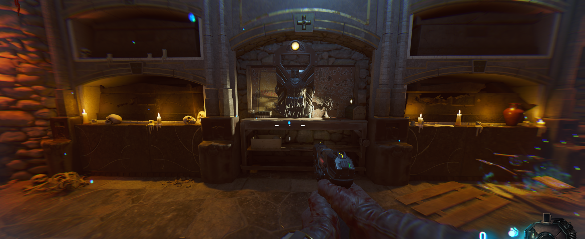
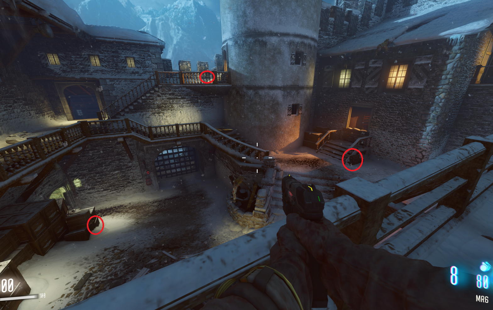
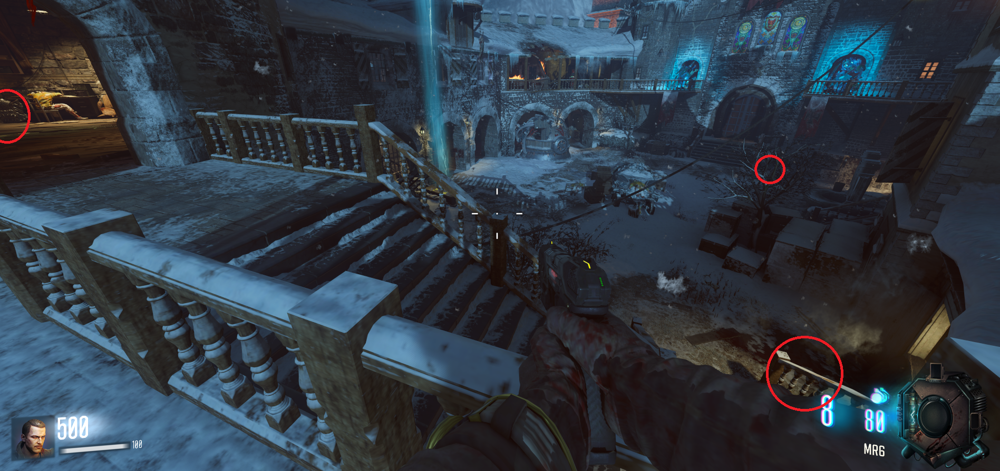
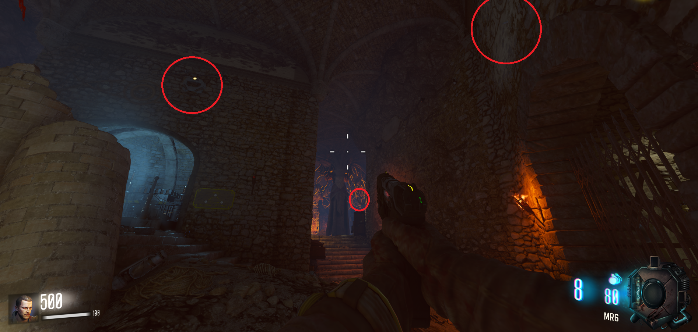

Escudo (Der Eisendrachen)

Primera parte: Según entramos a la zona del primer dragón puede encontrarse a la derecha, a la izquierda o subiendo las escaleras de la izquierda justo antes de llegar a la zona de los teslas.

Segunda parte: En la mesa de dentro de la torre del reloj, a la izquierda de las escaleras del patio a la torre o a la derecha de la entrada al segundo dragón .

Tercera parte: Tendremos que activar la gravedad para recogerlo (Nos quedamos de pies en cada uno de los 4 cuadrados alrededor de la pirámide). Se puede encontrar en la reja de encima de la pirámide, en la pared de encima de la zona del teleporter o encima del Pack-a-Punch
